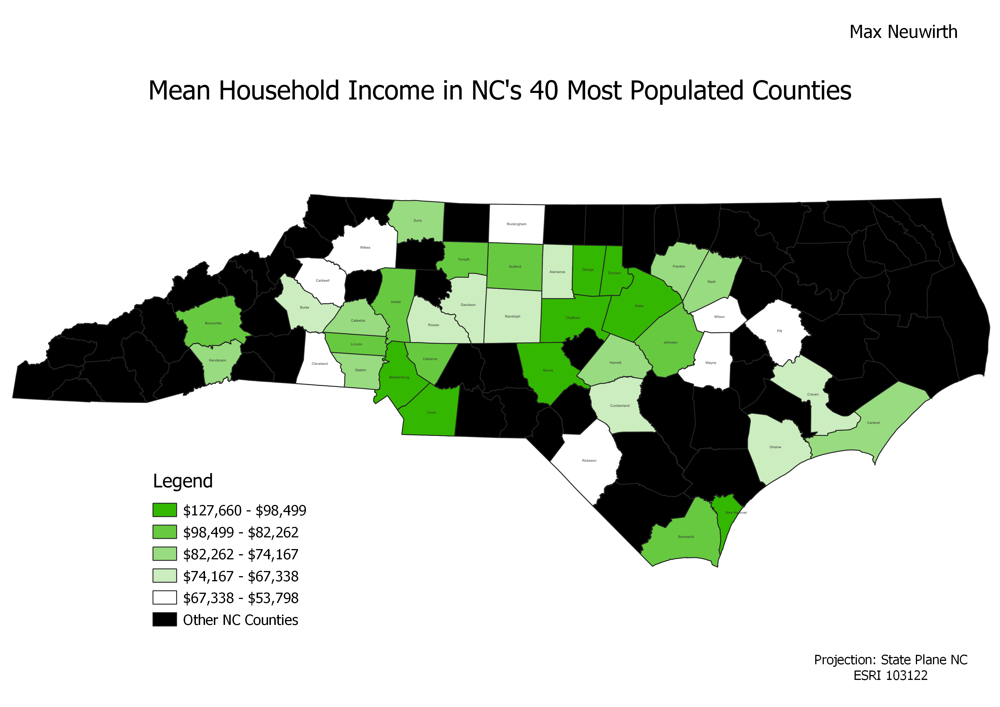

Homework 6: Census data choropleth
Max Neuwirth
This map shows the variations in average household income between North Carolina's 40 most populated counties. The map ranges from $53,798 per year to $127,660 per year.

Data used for this project
CSV dataset
Link to shapefile